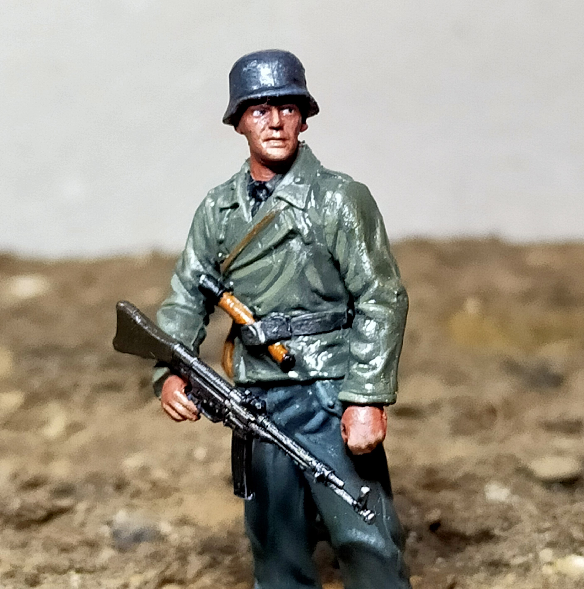
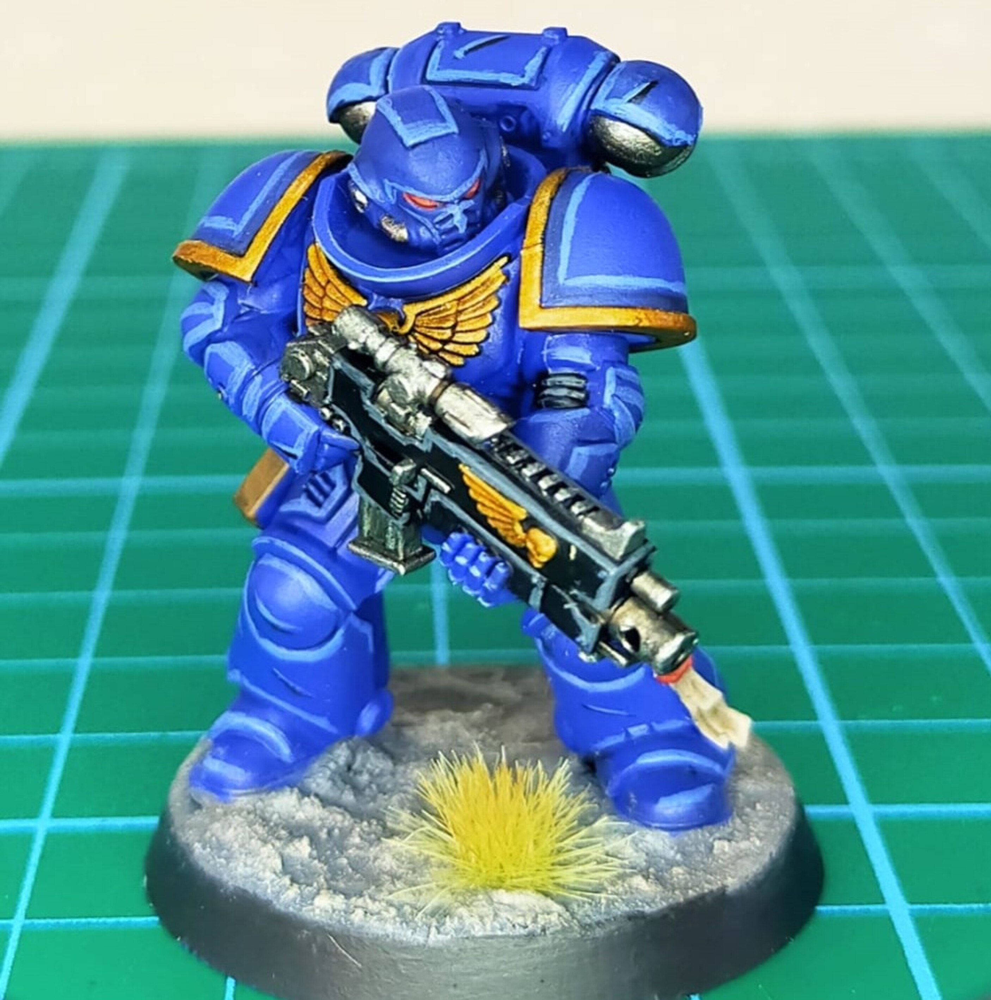
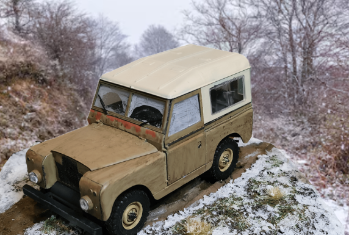
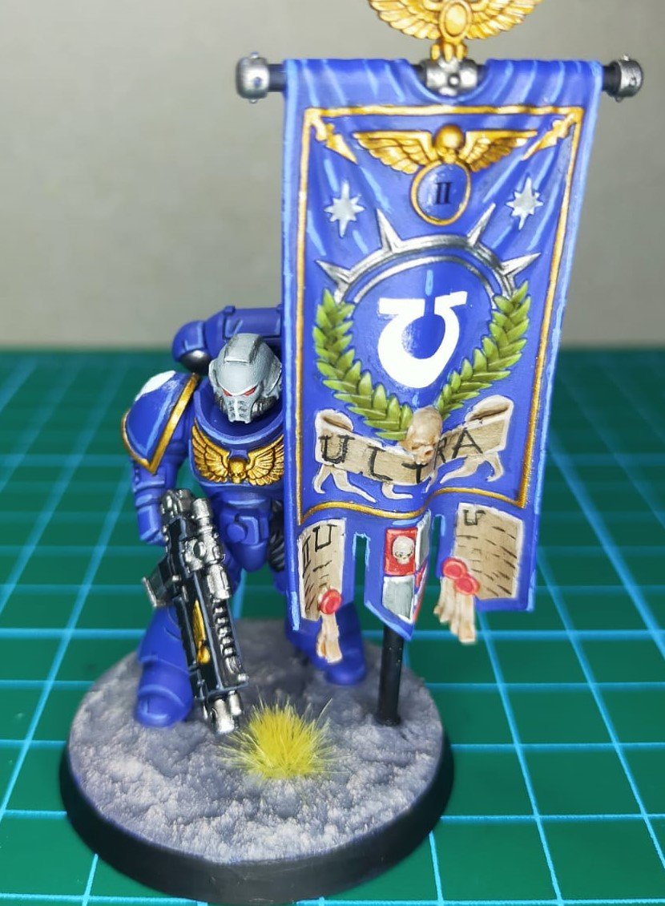
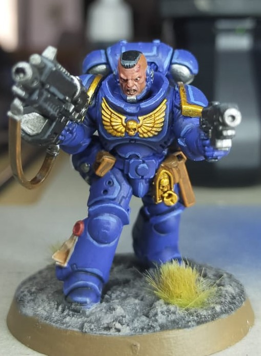
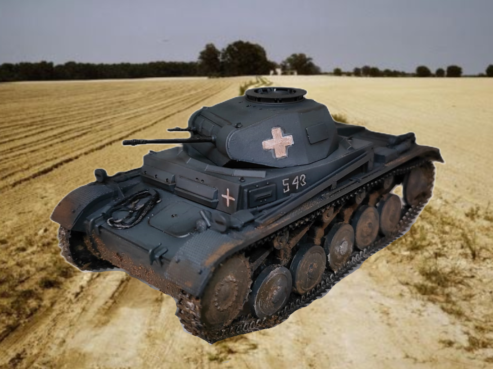
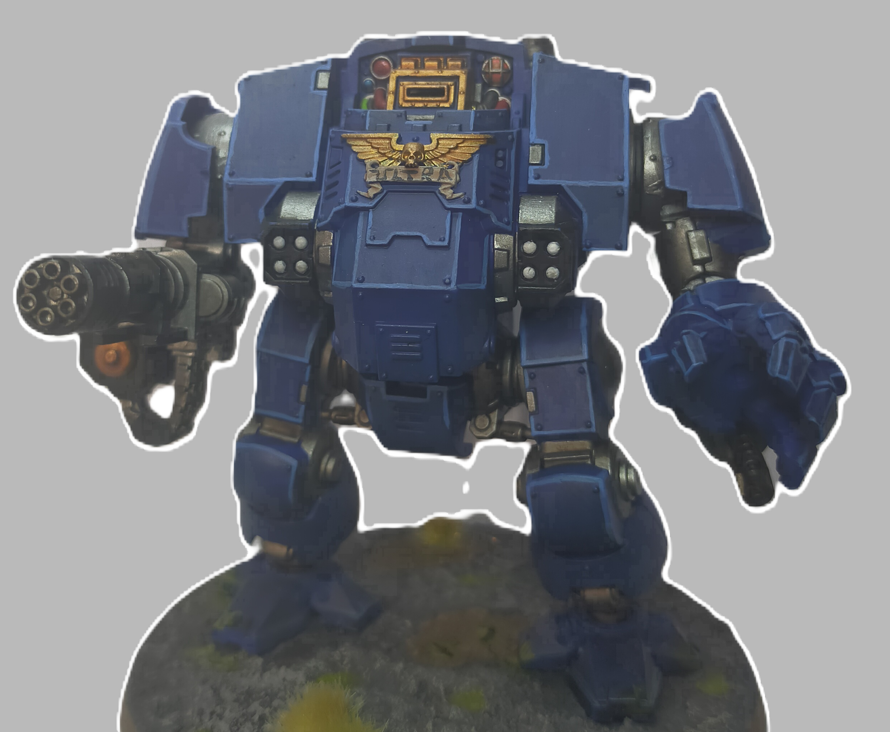

En esta pagina se muestran varias maquetas creadas por mi expuestas en forma de galería de imágenes. Todo ha sido pintado con pincel y aerógrafo.🖌️🎨
Galería de Maquetas
Figura de soldado alemán de la Segunda Guerra Mundial
Marine Espacial de los Ultramarines Warhammer 40k

Única maqueta civil, se trata de un modelo de Land Rover
Marine espacial con estandarte
Teniente de los Ultramarines
Panzer II alemán de la Segunda Guerra Mundial
KV 1 soviético de la Segunda Guerra Mundial

Dreadnought de los Ultramarines
Fuente de datos meteorológicos: sharpweather.com
©Samael González 2024